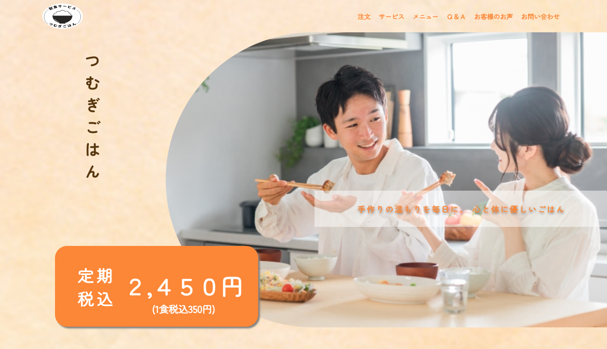

配食サービス「つむぎごはん」
『手作りの温もりを毎日に、心と体に優しいごはん』

配食サービス：『つむぎごはん』 オーナー 紬田 みのり（つむだ みのり）様
1週間ごとの定期配食サービスのオンライン注文機能付きWebサイト制作
30代から40代の男女。
1週間ごとの定期注文の受注
『美味しいことに自信はあるが、それをどうすれば良いかわからない。』
①献立の組み合わせを自由に選択できる仕組みであることが伝わるように。
②オンラインで受注する事が最優先であること。
名前: 佐藤美和子 (さとう みわこ)
年齡: 35歳
職業: 看護師(日勤のみ)、土日祝出勤あり
家族構成: 夫(38)、長男(6)、長女(10)
現状: 長男が小学校に入学した際に職場に復帰。夫婦共働き。
悩み:
子どもを迎えに行って、
帰宅してすぐに夕食を準備しなければいけない上に
献立を考えている余裕がない。
自身も疲れ切っている日はインスタント食品で済ますことがあり、
それでは子どもの栄養が偏ってしまう。
一日スケジュール
5:45 起床
6:00 支度、朝食準備
6:45 朝食
7:3О 夫出勤
7:50 長男、長女登校、自分も出勤
8:30~17:30 勤務(12:00~13:00の休憩)
子ども二人を学童へ迎えに行く。
18:00 (18:30) 帰宅、夕食準備
18:30(19:00) 夕食
20:00 お風呂 子どもたちと夫を先に入れて最後に自分が入る
その間に片付けなどの家事をする
21:00 お風呂
22:00 就寝
①12:00~13:00の休憩の合間にスマホを見る？
②22:00 就寝の前にネットサーフィンする？
『献立を考えている余裕がない。』『栄養が偏ってしまう。』
検索パターンを予測：
【ご飯 簡単】【調理 簡単】【毎日の献立 美味しい 栄養】
【安い 美味しい 簡単料理】【楽ちん 晩ご飯】
価格表示を目立たせ、依頼の本文である『1週間ごとの定期配食サービス』であることを伝える。
課題：『美味しいことに自信はあるが、それをどうすれば良いかわからない。』
課題：①献立の組み合わせを自由に選択できる仕組みであることが伝わるように。
和・洋・中のメニューの中から選べることが伝わるように
大きく3つ分け、美味しそうな料理の写真をメインに掲載。
親しみやすさ、温かみを意識しオレンジ色をメインに.。
フォントは丸みのあるものを使用。